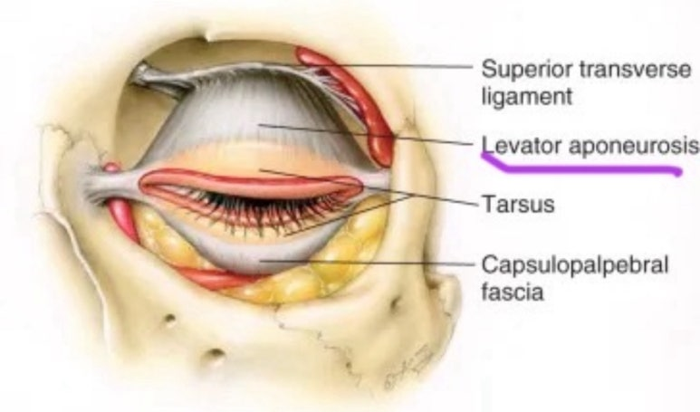
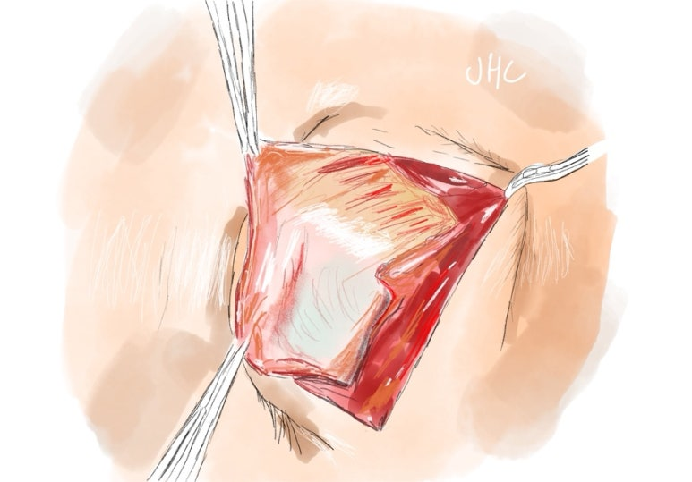
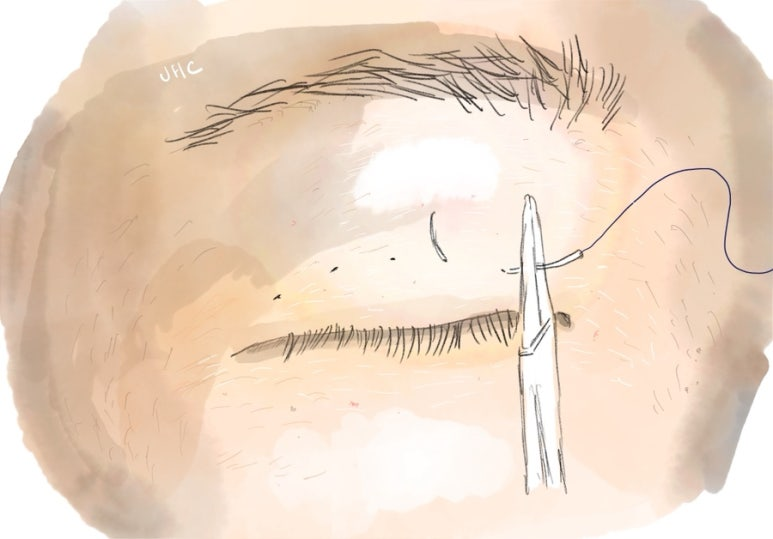
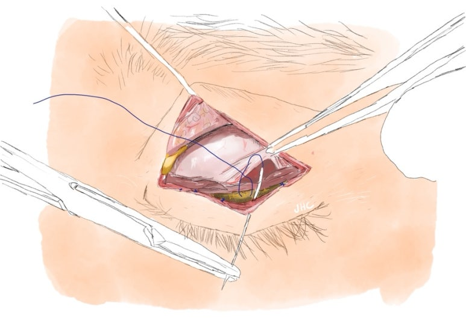
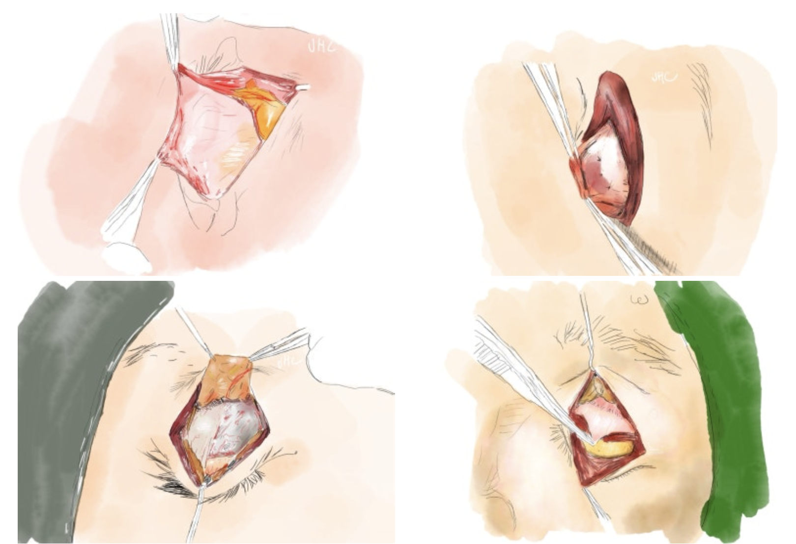
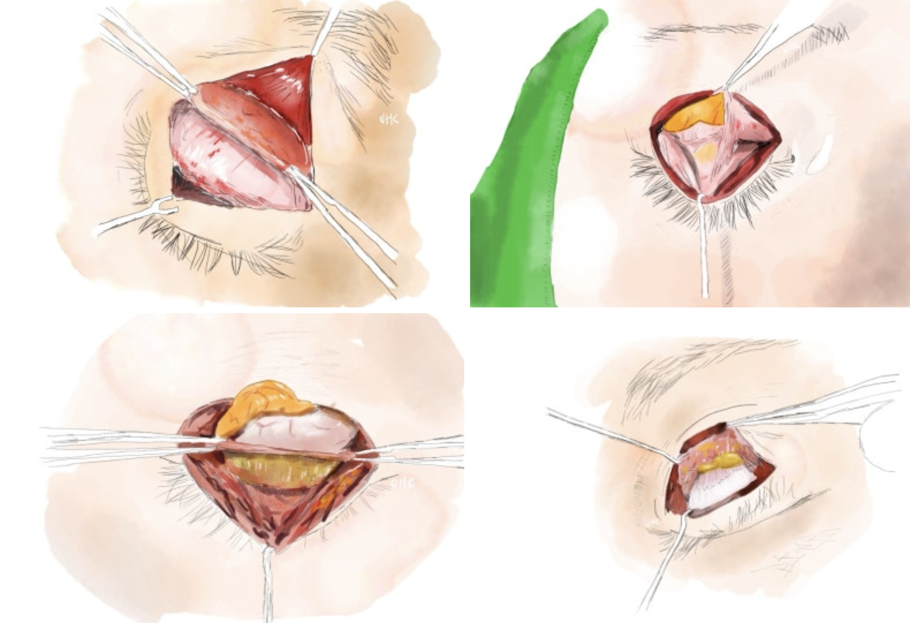

눈성형수술을 하는 의사라면
'리베이터' 라는 단어를
모를 수 없습니다
아는 것을 넘어서,
가장 중요한 주제일 수 밖에
없는 경우가 많습니다

리베이터 : levator aponeurosis를 칭합니다
더 나아가, 저 처럼
절개 눈재수술, 극한눈 재수술을
주로 하는 의사라면,
수술의 주된 고민영역은
이 '리베이터'라는 조직을
어떻게 다루느냐로
귀결되는 경우가 많습니다

절개 수술중에 펼쳐놓은 리베이터입니다. 미세하게 색감이 부위마다 다릅니다
눈성형, 쌍꺼풀 수술은
초보 성형외과 의사가
가장 많이 처음으로 접하는
미용성형수술 분야입니다.

매몰, 자연유착과 같은 비절개 쌍꺼풀 수술
매몰법, 자연유착법과 같은
속칭 "찝는 쌍수" 수술은
가장 잘못될 일도 적고,
생초보 의사도 좀만 배우면
쉽게 할 수 있는 수술이라 할 수 있습니다
이렇게 수술 경험을 쌓던 성형외과 의사가
가장 크게 벽을 느끼고 당황하게 되는 것은
절개쌍꺼풀수술을 하고,
특히 리베이터 조작이 원하는대로 되지
않는 경험을 하면서부터입니다

우측의 포셉으로 잡고 있는 분홍색 조직이 리베이터입니다. 이 리베이터를 아래쪽 카키색 검판에 고정하는 것을 절개눈매교정이라 합니다
저 또한 그런 과정을 거쳤고,
거의 모든 선배,동기,후배 성형외과의사들이
눈성형에서 관련 주제로 이야기하면
각자의 어려웠던 경험을
몇시간은 얘기할 수 있을 정도입니다
여기서 대부분의 성형외과의사의 선택은
두가지로 나뉩니다
1. 리베이터를 최대한 덜 건드리는 수술법을 택한다
어차피 리베이터를 꼭 조작하지 않고
눈매교정을 대부분 약하게만 조작해도
80%정도의 눈성형은 문제없이 수행 가능합니다
박리범위가 적은 '하이브리드절개법'을
주로 사용하면
골치아프게 리베이터를 조작할 필요가 없습니다
또한 대부분 성형외과 의사들은
단가가 저렴한 눈성형보다 '코성형' 등을
주로 하고 싶어하기 때문에
굳이 절개눈성형의 복잡한 분야에
많은 고민을 하고 싶어하지 않습니다
2. 리베이터를 과감히 조작한다
화려한 눈, 큰 눈, 안검하수를 극복한 눈을
큰 변화로 야기할 수 있지만
섬세하지 못하면
시간이 지날수록 비대칭, 짝눈, 과교정의
리스크도 커질 수 밖에 없습니다.
제 경우엔 처음엔 리베이터를 과감히 조작하는
의사분들의 수술이 경과를 봤을 때
더욱 불량한 경과가 많다고 판단했고,
꼭 필요한 경우가 아니면
최대한 소극적으로 조작하려고
제 수술의 경향을 조절했습니다
그러나 점점 라인낮추기, 극한눈재수술을
많이 하게 되면서
이런 복잡한 재수술의 경우일수록
리베이터의 적절한 조작 없이는
원하는 모양을 만들 수 없다는 사실을
깨닫게 되었습니다.
결국 얼마나 과하지 않고 리베이터를
변화시켜 원하는 또렷함, 라인 두께를
만들어내냐가 관건이 되는데
안정적인 수술적 결과를 내기 위해서는
눈과 눈알, 눈확, 눈매, 눈꺼풀의
총체적인 밸런스와 균형에 대한
구조적인 이해가 필수적입니다


제가 그린 리베이터의 그림들입니다
하지만 성형외과 교과서에서는
리베이터의 조작을
4mm정도 땡기면 눈동자가 1mm정도 보인다
수준의 기술로만 다루고 있습니다
이런 정보만 갖고 리베이터 조작을 하면
무조건적으로 환자분들께 피해를 줄 수 밖에 없습니다
결국 리베이터 조작을 적절히 해서
복잡한 눈재수술을 제대로 해결하는 의사라면
눈의 밸런스와 수술 술기에 대한,
교과서에 나오지 않는 정도 깊이의
주체적인 철학이 필수적이라고 생각합니다
상담실에서 이 모든 내용을 전달드릴 수 없으나
제가 생각한 이런 내용은
매일매일의 수술에서 반영이 되고 있으며
그 결과는,
5-6차례 재수술 실패한 눈들을 해결하는 비율이
그 어느 병원보다도 높으며,
두껍게 수술이 잘못된 눈들을
실패율없이 자연스럽게 얇은 쌍꺼풀로 만들고 있고,
첫수술의 경우에도
그 어느 병원에서보다 자연스럽고 비율이 맞는
모습으로 만들어 낸다는 자부심입니다.
#눈성형 #눈재수술 #쌍수재수술 #쌍꺼풀재수술 #쌍커풀재수술#눈재수술유명한곳